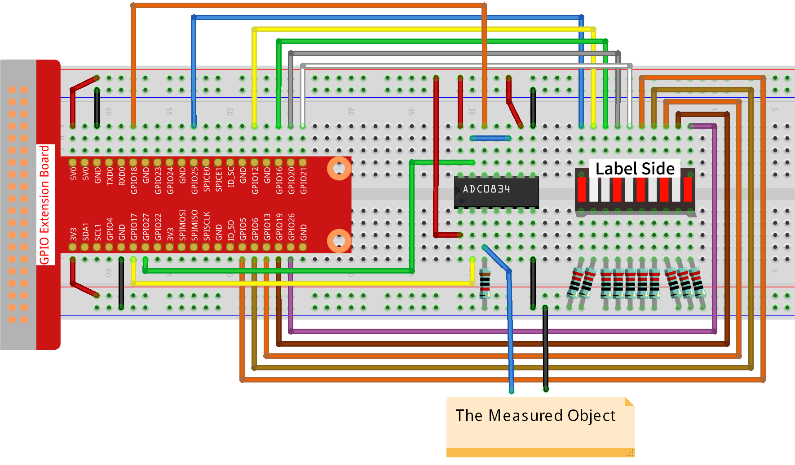

Nota
Ciao e benvenuto nella SunFounder Raspberry Pi & Arduino & ESP32 Enthusiasts Community su Facebook! Approfondisci l’utilizzo di Raspberry Pi, Arduino ed ESP32 con altri appassionati.
Perché unirsi a noi?
Supporto Esperto: Risolvi problemi post-vendita e sfide tecniche con l’aiuto della nostra comunità e del nostro team.
Impara e Condividi: Scambia consigli e tutorial per migliorare le tue abilità.
Anteprime Esclusive: Accedi anticipatamente agli annunci di nuovi prodotti e alle anteprime.
Sconti Speciali: Godi di sconti esclusivi sui nostri ultimi prodotti.
Promozioni Festive e Giveaway: Partecipa a giveaway e promozioni durante le festività.
üëâ Pronto a esplorare e creare con noi? Clicca su [Qui] e unisciti oggi!
3.1.5 Indicatore di Batteria
Introduzione
In questo progetto, creeremo un dispositivo indicatore di batteria che potrà visualizzare visivamente il livello di carica della batteria su un Bargraph LED.
Componenti Necessari
Per questo progetto, abbiamo bisogno dei seguenti componenti.

Schema Elettrico
T-Board Name |
physical |
wiringPi |
BCM |
GPIO17 |
Pin 11 |
0 |
17 |
GPIO18 |
Pin 12 |
1 |
18 |
GPIO27 |
Pin 13 |
2 |
27 |
GPIO25 |
Pin 22 |
6 |
25 |
GPIO12 |
Pin 32 |
26 |
12 |
GPIO16 |
Pin 36 |
27 |
16 |
GPIO20 |
Pin 38 |
28 |
20 |
GPIO21 |
Pin 40 |
29 |
21 |
GPIO5 |
Pin 29 |
21 |
5 |
GPIO6 |
Pin 31 |
22 |
6 |
GPIO13 |
Pin 33 |
23 |
13 |
GPIO19 |
Pin 35 |
24 |
19 |
GPIO26 |
Pin 37 |
25 |
26 |

Procedure Sperimentali
Passo 1: Costruisci il circuito.
Passo 2: Accedi alla cartella del codice.
cd ~/davinci-kit-for-raspberry-pi/python-pi5
Passo 3: Esegui il file eseguibile.
sudo python3 3.1.5_BatteryIndicator.py
Dopo aver avviato il programma, collega separatamente un filo di uscita al 3° pin dell’ADC0834 e al GND, quindi connettili ai due poli di una batteria. Potrai vedere l’accensione del LED corrispondente sul Bargraph LED che visualizza il livello di carica (intervallo di misura: 0-5V).
Avvertimento
Se appare l’errore RuntimeError: Cannot determine SOC peripheral base address, fai riferimento a Se gpiozero non funziona.
Codice
Nota
Puoi Modificare/Ripristinare/Copiare/Eseguire/Interrompere il codice qui sotto. Prima di tutto, però, accedi al percorso del codice sorgente come davinci-kit-for-raspberry-pi/python-pi5. Dopo aver modificato il codice, puoi eseguirlo direttamente per vedere l’effetto.
#!/usr/bin/env python3
from gpiozero import LED
import ADC0834
import time
# Elenco dei pin GPIO a cui sono collegati i LED
ledPins = [25, 12, 16, 20, 21, 5, 6, 13, 19, 26]
# Inizializza gli oggetti LED per ciascun pin nella lista
leds = [LED(pin) for pin in ledPins]
# Configura il modulo ADC0834
ADC0834.setup()
def LedBarGraph(value):
# Spegne tutti i LED
for i in range(10):
leds[i].off()
# Accende i LED fino al valore specificato
for i in range(value):
leds[i].on()
try:
# Ciclo principale per aggiornare continuamente il Bargraph LED
while True:
# Legge il valore analogico dall'ADC0834
analogVal = ADC0834.getResult()
# Converte il valore analogico nel livello del Bargraph LED
LedBarGraph(int(analogVal/25))
except KeyboardInterrupt:
# Spegne tutti i LED quando il programma viene interrotto
for i in range(10):
leds[i].off()
Spiegazione del Codice
Questa sezione importa le librerie necessarie.
gpiozeroserve per controllare i LED,ADC0834per interfacciarsi con il modulo ADC, etimeper operazioni temporali.#!/usr/bin/env python3 from gpiozero import LED import ADC0834 import time
Definisce i pin GPIO a cui sono collegati i LED e inizializza un array di oggetti LED per ciascun pin, permettendo di controllare facilmente ogni LED nell’array.
# Elenco dei pin GPIO a cui sono collegati i LED ledPins = [25, 12, 16, 20, 21, 5, 6, 13, 19, 26] # Inizializza gli oggetti LED per ciascun pin nella lista leds = [LED(pin) for pin in ledPins]
Inizializza il modulo ADC0834 per la conversione analogico-digitale.
# Configura il modulo ADC0834 ADC0834.setup()
Questa funzione spegne tutti i LED e accende un numero di LED basato sul valore di input, creando effettivamente una rappresentazione grafica a barre.
def LedBarGraph(value): # Spegne tutti i LED for i in range(10): leds[i].off() # Accende i LED fino al valore specificato for i in range(value): leds[i].on()
Legge continuamente il valore analogico dall’ADC0834 e aggiorna il Bargraph LED in base a questo valore. Il valore analogico è scalato su un intervallo di 0-10 per i 10 LED.
try: # Ciclo principale per aggiornare continuamente il Bargraph LED while True: # Legge il valore analogico dall'ADC0834 analogVal = ADC0834.getResult() # Converte il valore analogico nel livello del Bargraph LED LedBarGraph(int(analogVal/25))
Assicura che tutti i LED siano spenti quando il programma viene interrotto (ad esempio, premendo Ctrl+C).
except KeyboardInterrupt: # Spegne tutti i LED quando il programma viene interrotto for i in range(10): leds[i].off()